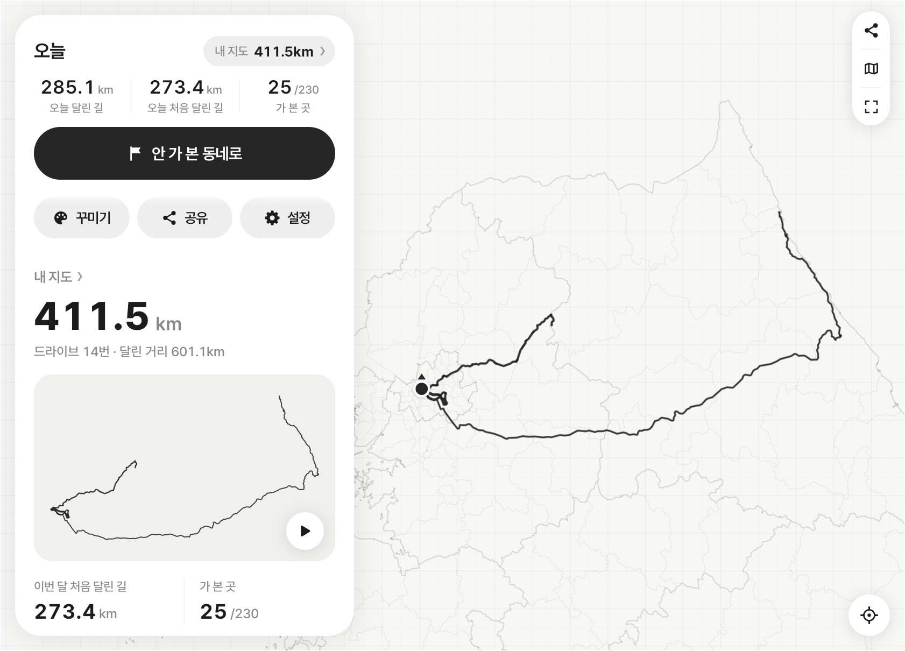
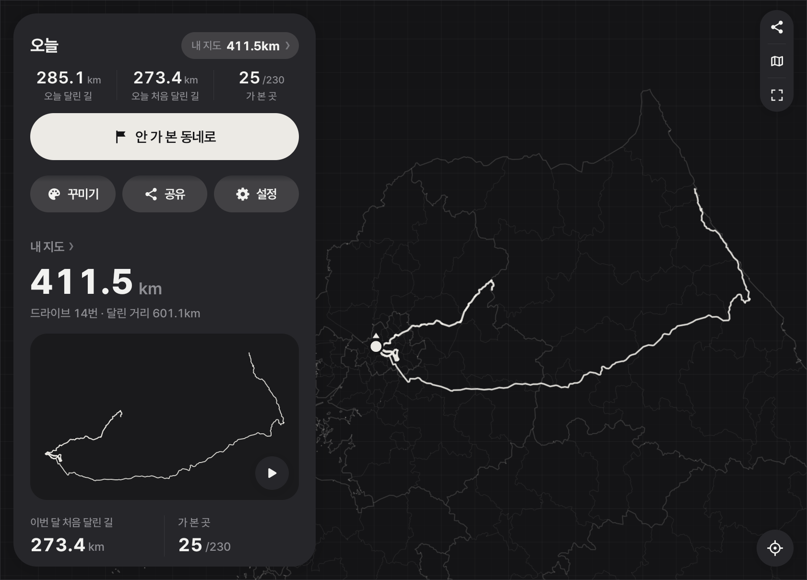
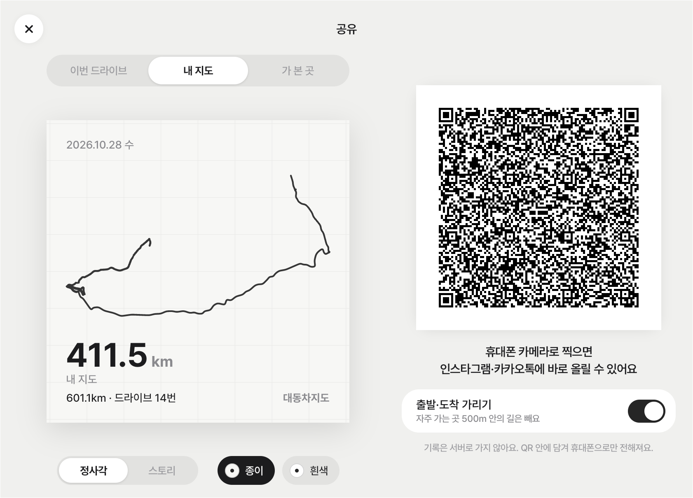

Pleos Connect 앱 · 차량용 앱 개발 공모전 출품작
대동차지도
大東車地圖
대동여지도(김정호, 1861)의 ‘여(수레)’를 ‘차’로 바꾼 이름
달린 도로를 자동으로 기록해 지도에 그린다
기어를 D에 두면 1초 간격으로 위치를 기록하고, P에 두면 경로와 주행 거리를 저장한다. 드라이브마다 처음 달린 도로의 길이를 세고, 전국 230개 시·군·구 중 방문한 곳을 센다.
시연 영상
1분 56초. 출발(기어 D)부터 주차(기어 P) 뒤 도착 요약, 휴대폰으로 QR을 찍어 카드를 여는 과정까지.
차 화면
Pleos Connect 에뮬레이터의 앱 화면(1682×1210)이다. 주행 중에는 기록 목록·공유·다시 보기·배색 변경이 막히고, 안내는 음성으로만 한다.

내 지도
밤 배색 (‘자동’ + 차 야간 모드) 가 본 곳 (230개 시·군·구)
가 본 곳 (230개 시·군·구)
QR 공유
기능
-
기어 D에서 기록 시작, P에서 저장
기어가 D로 바뀌면 1초 간격으로 위치를 기록하고, P로 바뀌면 경로, 주행 거리, 처음 달린 거리, 지나간 시·군·구를 저장한다. 누르는 버튼은 없다. 기어 신호가 없는 차에서는 시속 5km 이상으로 10초 달리면 시작하고, 3분 멈춰 있으면 끝낸다.
-
모든 드라이브를 한 장의 지도에 그린다
같은 도로를 다시 달리면 기존 선에 합치고, 최대 약 30m 떨어진 왕복 차로는 한 줄로 그린다. 선 굵기는 지난 횟수에 따라 5단계(1회, 2회, 3~4회, 5~8회, 9회 이상)다. GPS가 끊긴 터널 구간은 3km·5분 이내면 직선으로 잇는다.
-
처음 달린 도로의 길이를 센다
“오늘 42.1km 중 처음 달린 길 12.4km.” 같은 출퇴근길을 다시 달리면 0km다. 시연 주행에서 다른 다리로 돌아간 날은 20.4km로 계산됐고, 실제 다른 구간의 길이도 20.4km다.
-
전국 230개 시·군·구 중 방문한 곳을 센다
한 지역 안에 30초 이상 있으면 방문으로 기록한다. 주행 중 처음 들어간 지역은 음성으로 알린다: “양양군, 처음 와 보는 곳이에요.”
-
200km 안의 미방문 지역 5곳으로 길 안내
아직 가지 않은 시·군·구 5곳을 직선거리 순으로 거리·방향과 함께 보여 준다. ‘길 안내’를 누르면 그 지역의 대표 지점을 목적지로 Pleos 내비게이션에 경로를 요청한다(NaviHelper SDK).
-
P에서 도착 요약, 다시 보기
이번 주행 거리, 처음 달린 길, 첫 방문 지역을 화면에 표시하고 “오늘 처음 달린 길 12.4킬로미터”처럼 음성으로 읽는다. 다시 보기는 드라이브 하나, 지역 하나, 또는 전체 기록을 달린 순서대로 3.5~12초 동안 다시 그린다.
-
QR로 휴대폰에 카드 3종을 보낸다
정차 중 공유를 누르면 이번 드라이브·내 지도·가 본 곳 카드가 QR로 나온다. 휴대폰 카메라로 찍으면 이 사이트가 1080×1080 또는 1080×1920 이미지를 그린다. 출발·도착 지점에서 300m 안의 경로는 카드에서 지운다(기본 켬).
샘플 카드
차가 QR 주소에 넣는 것과 같은 형식의 데이터로 그린 카드다. 공유 페이지에서 비율(정사각형·스토리)과 바탕 배색을 바꾸고, 이미지로 저장하거나 공유한다.
- 드라이브 카드가평 주말 드라이브 — 주행 거리와 처음 달린 길
- 여행 카드강릉 여행 — 장거리 드라이브 1개를 QR 1개에 넣은 카드
- 내 지도저장한 모든 드라이브의 도로, 지난 횟수에 따라 5단계 굵기
- 가 본 곳전국 230개 시·군·구 중 방문한 곳
카드 데이터는 QR 주소의 # 뒤에만 들어간다. 브라우저는 # 뒤 내용을 서버로 보내지 않으므로, 카드는 휴대폰 브라우저 안에서 그려지고 기록은 어떤 서버에도 저장되지 않는다. 이 사이트는 분석 도구를 쓰지 않고 다른 사이트에 요청하지 않는다.